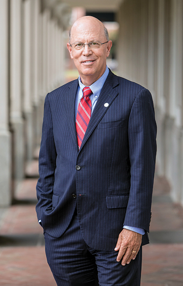

Gratitude.
fromThePresident
 Richard V. Homan, MDWhen considering the focus of this letter, it was the first word that came to mind. And since last March, it has been the final thought I have had at the end of every day.
Gratitude for our faculty and staff, who have gone above and beyond to keep EVMS operating while keeping all of us safe.
Gratitude for our students and residents, adaptable and flexible as they are, who are eager to learn in new and creative ways.
Gratitude for our physicians and health professionals, who never hesitate to put their own health at risk in service to others.
And most of all, gratitude for you and all of our supporters, who are standing with us during these unprecedented times, reminding us daily of our calling, our mission.
Within these pages you will learn more about why I am profoundly grateful.
Albert Einstein once said, “There are only two ways to live your life. One is as though nothing is a miracle. The other is as though everything is a miracle.”
The last six months are proof. We choose the miracles.
From the bottom of my heart, I thank you.
Sincerely,
Signature??
Richard V. Homan, MD